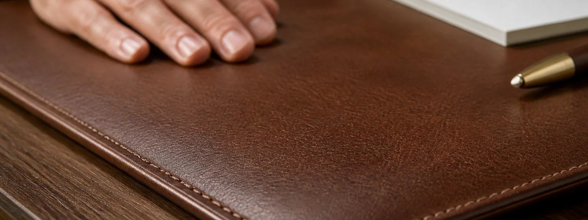

This support page focuses on full-grain, top-grain, vegan, and pu leather choices for leather desk blotters. Product comparisons belong on 7 Best Leather Desk Blotters. Previous cloud article: under-desk treadmills.
Full-Grain, Top-Grain, Vegan, and PU Leather Choices
Material tradeoff. Full-grain leather develops patina and usually costs more. Top-grain can look smoother. Vegan and PU options can be easier to wipe, but backing quality and edge finishing become more important because peeling corners ruin the desk look quickly.
Writing feel. The mat should support quick notes, signed documents, planner pages, and a mouse without making the work area feel spongy or sticky. For full-grain, top-grain, vegan, and pu leather choices, weigh this point against the actual desk shape, writing habits, devices, and care tolerance rather than ranking by looks alone.
Material honesty. The listing should make clear whether the surface is full-grain leather, top-grain leather, bonded leather, vegan leather, or PU, because each choice ages and cleans differently. For full-grain, top-grain, vegan, and pu leather choices, weigh this point against the actual desk shape, writing habits, devices, and care tolerance rather than ranking by looks alone.
Desk protection. A useful blotter protects against scratches, heat marks, coffee rings, pen pressure, keyboard feet, and the tiny polish marks that appear when accessories slide across the same spot every day. For full-grain, top-grain, vegan, and pu leather choices, weigh this point against the actual desk shape, writing habits, devices, and care tolerance rather than ranking by looks alone.
Visual control. The best choice makes the desk look more intentional: it frames the keyboard, softens a glass or laminate surface, and gives notebooks, pens, and laptop stands a defined landing zone. For full-grain, top-grain, vegan, and pu leather choices, weigh this point against the actual desk shape, writing habits, devices, and care tolerance rather than ranking by looks alone.
Care routine. Cleaning should match the user. Some buyers enjoy leather conditioner and patina; others need a quick wipe-down surface that can survive shared office coffee and daily fingerprints. For full-grain, top-grain, vegan, and pu leather choices, weigh this point against the actual desk shape, writing habits, devices, and care tolerance rather than ranking by looks alone.
Long-term value. Value comes from flat edges, grippy backing, solid stitching, realistic dimensions, clear returns, and a surface that still looks professional after months of everyday work. For full-grain, top-grain, vegan, and pu leather choices, weigh this point against the actual desk shape, writing habits, devices, and care tolerance rather than ranking by looks alone.
Decision note. A leather desk blotter should make the desk quieter, more protected, and easier to organize. If full-grain, top-grain, vegan, and pu leather choices improves those daily moments without adding fussy maintenance, it is much more likely to feel like a lasting office upgrade.
Desk setup checklist
Material tradeoff. Full-grain leather develops patina and usually costs more. Top-grain can look smoother. Vegan and PU options can be easier to wipe, but backing quality and edge finishing become more important because peeling corners ruin the desk look quickly.
Writing feel. The mat should support quick notes, signed documents, planner pages, and a mouse without making the work area feel spongy or sticky. For buyer checklist for full-grain, top-grain, vegan, and pu leather choices, weigh this point against the actual desk shape, writing habits, devices, and care tolerance rather than ranking by looks alone.
Material honesty. The listing should make clear whether the surface is full-grain leather, top-grain leather, bonded leather, vegan leather, or PU, because each choice ages and cleans differently. For buyer checklist for full-grain, top-grain, vegan, and pu leather choices, weigh this point against the actual desk shape, writing habits, devices, and care tolerance rather than ranking by looks alone.
Desk protection. A useful blotter protects against scratches, heat marks, coffee rings, pen pressure, keyboard feet, and the tiny polish marks that appear when accessories slide across the same spot every day. For buyer checklist for full-grain, top-grain, vegan, and pu leather choices, weigh this point against the actual desk shape, writing habits, devices, and care tolerance rather than ranking by looks alone.
Visual control. The best choice makes the desk look more intentional: it frames the keyboard, softens a glass or laminate surface, and gives notebooks, pens, and laptop stands a defined landing zone. For buyer checklist for full-grain, top-grain, vegan, and pu leather choices, weigh this point against the actual desk shape, writing habits, devices, and care tolerance rather than ranking by looks alone.
Care routine. Cleaning should match the user. Some buyers enjoy leather conditioner and patina; others need a quick wipe-down surface that can survive shared office coffee and daily fingerprints. For buyer checklist for full-grain, top-grain, vegan, and pu leather choices, weigh this point against the actual desk shape, writing habits, devices, and care tolerance rather than ranking by looks alone.
Long-term value. Value comes from flat edges, grippy backing, solid stitching, realistic dimensions, clear returns, and a surface that still looks professional after months of everyday work. For buyer checklist for full-grain, top-grain, vegan, and pu leather choices, weigh this point against the actual desk shape, writing habits, devices, and care tolerance rather than ranking by looks alone.
Decision note. A leather desk blotter should make the desk quieter, more protected, and easier to organize. If buyer checklist for full-grain, top-grain, vegan, and pu leather choices improves those daily moments without adding fussy maintenance, it is much more likely to feel like a lasting office upgrade.
Daily use rehearsal
Material tradeoff. Full-grain leather develops patina and usually costs more. Top-grain can look smoother. Vegan and PU options can be easier to wipe, but backing quality and edge finishing become more important because peeling corners ruin the desk look quickly.
Writing feel. The mat should support quick notes, signed documents, planner pages, and a mouse without making the work area feel spongy or sticky. For daily use rehearsal for full-grain, top-grain, vegan, and pu leather choices, weigh this point against the actual desk shape, writing habits, devices, and care tolerance rather than ranking by looks alone.
Material honesty. The listing should make clear whether the surface is full-grain leather, top-grain leather, bonded leather, vegan leather, or PU, because each choice ages and cleans differently. For daily use rehearsal for full-grain, top-grain, vegan, and pu leather choices, weigh this point against the actual desk shape, writing habits, devices, and care tolerance rather than ranking by looks alone.
Desk protection. A useful blotter protects against scratches, heat marks, coffee rings, pen pressure, keyboard feet, and the tiny polish marks that appear when accessories slide across the same spot every day. For daily use rehearsal for full-grain, top-grain, vegan, and pu leather choices, weigh this point against the actual desk shape, writing habits, devices, and care tolerance rather than ranking by looks alone.
Visual control. The best choice makes the desk look more intentional: it frames the keyboard, softens a glass or laminate surface, and gives notebooks, pens, and laptop stands a defined landing zone. For daily use rehearsal for full-grain, top-grain, vegan, and pu leather choices, weigh this point against the actual desk shape, writing habits, devices, and care tolerance rather than ranking by looks alone.
Care routine. Cleaning should match the user. Some buyers enjoy leather conditioner and patina; others need a quick wipe-down surface that can survive shared office coffee and daily fingerprints. For daily use rehearsal for full-grain, top-grain, vegan, and pu leather choices, weigh this point against the actual desk shape, writing habits, devices, and care tolerance rather than ranking by looks alone.
Long-term value. Value comes from flat edges, grippy backing, solid stitching, realistic dimensions, clear returns, and a surface that still looks professional after months of everyday work. For daily use rehearsal for full-grain, top-grain, vegan, and pu leather choices, weigh this point against the actual desk shape, writing habits, devices, and care tolerance rather than ranking by looks alone.
Decision note. A leather desk blotter should make the desk quieter, more protected, and easier to organize. If daily use rehearsal for full-grain, top-grain, vegan, and pu leather choices improves those daily moments without adding fussy maintenance, it is much more likely to feel like a lasting office upgrade.
Final fit buffer
Also check the desk under real lighting at the end of a workday. Fingerprints, cable shadows, paper dust, coaster marks, lamp reflections, and the way the front edge meets the wrist area can reveal more than a perfect product photo. A blotter that keeps the desk calm during that ordinary routine is the stronger choice.
When the surface, size, and care routine are clear, compare the full leather desk blotter shortlist here: 7 Best Leather Desk Blotters.